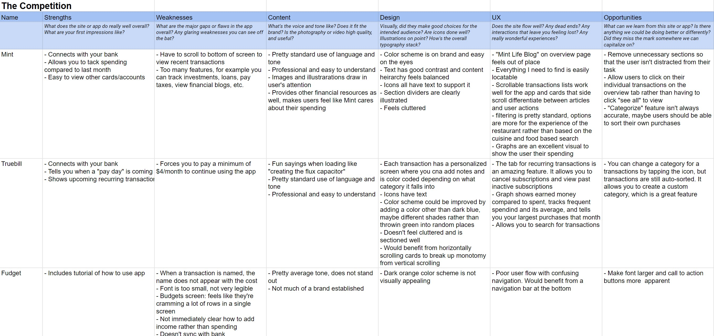
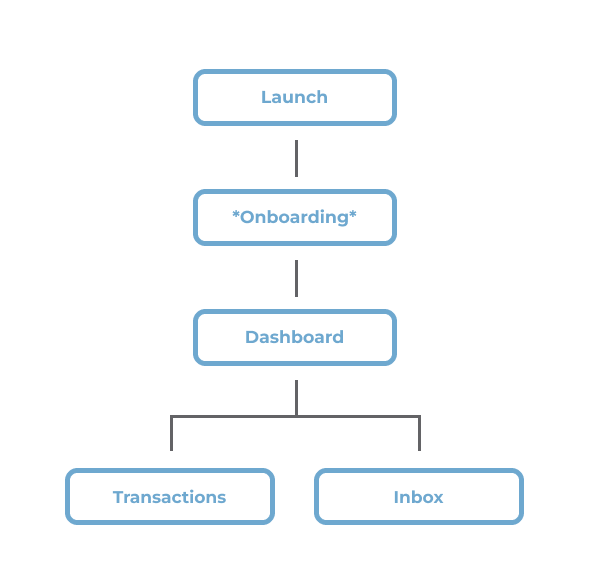
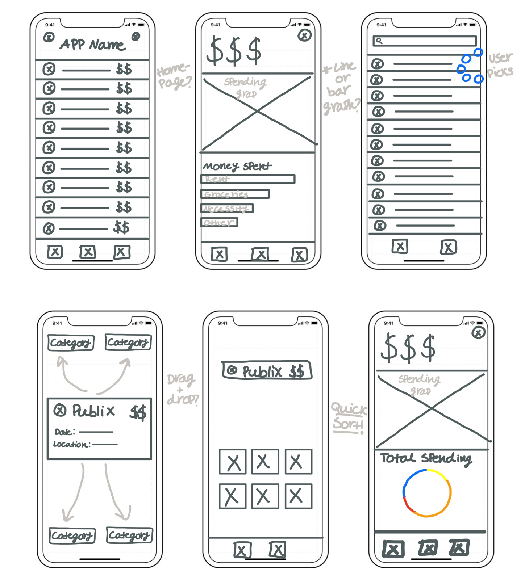
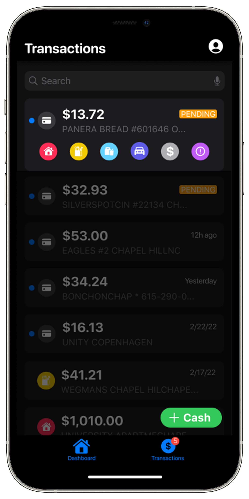

What Centible Means to Me
During the spring 2022 semester, the UNC-Chapel Hill Computer Science Department planned to have their first ever "App-A-Thon" in April where students could submit a fully designed and developed app to be enter into their contest. After brainstorming ideas, we decided to build an app focused on financial awareness for college students. Most college students struggle with a consistent way to keep track of their money -- our team included -- so we thought Centible would be beneficial not only to ourselves, but to anyone who needs help keeping track of where their money goes. Our app ended up winning a total of $500 from the contest for "Best App" and "Best Functionality," which will most likely go towards funding our API for future users!
Challenge
College students have a difficult time sticking to their current budgeting apps because there are too many complex and distracting features.
Solution
Create a simplified spending tracker that builds financial awareness by helping users understand where their money is going.
User Research: Summary
Our initial idea was to design an app that would budget our users' money, but after speaking with college students, we realized that we weren't seeing many commonalities in how people currently tracked their money or what they wanted out of an app, a budgeting feature included. Our solution was to design a simple spending tracker that would be flexible to user needs and ultimately teach financial and spending awareness.
Insights from Listening Sessions
Pain Point: Current apps have distracting features that don't apply to many college students, like the “Marketplace” on Mint that allows users to invest their money or search for auto insurance
Solution: Only include features that the students would use, and keep the content on each screen minimal
Pain Point: Many apps auto-sort transactions, but don’t always sort the user’s spending correctly
Solution: Don't auto-sort a user's transactions, rather have them sort it themselves in a way that isn't time consuming
Pain Point: Apps that don’t automatically sync with your bank force you to type in every transaction, which is time consuming and difficult to commit to doing long term
Solution: Automatically sync the user's banking information, but don't auto-sort it
Pain Point: Not every user wants to budget their money or have it sorted into categories -- some just want to make sure they aren't going over a certain amount each week/month
Solution: Have the app be functional for users who don't want to budget, just track and compare their spending on a weekly/monthly basis
The top 4 apps our college students reported using were Mint, Truebill, Fudget, and Goodbudget, so we decided to include them in our competitor analysis. Two of these apps automatically sort purchases but have more complex features that distracted users. The other two require the user to manually type in every transaction, which users did not like.
Information Architecture
We wanted the app to have a simple user flow so that users could focus on tracking their current spending. During onboarding, they are welcomed, set up their banking information through Plaid, and select which categories they would like to have.
After setting up the app, they can view their overall spending on the dashboard, view a list of their transactions, and sort them with the Inbox.
Sketches
Since this app required so few screens, we decided to sketch out and build multiple ideas to share with the rest of the team so we could fine-tune which features we thought would work best with users. Initial sketches included a drag and drop sort feature, a line versus bar graph for the home screen, and a quick sort feature from the transactions page where users would sort individual transactions.
Iterations

Initially, we thought it would be most intuitive for users to sort their transactions as they appeared on their transactions list by using a swiping gesture. We recieved feedback that this was not an intuitive way to sort, however, so we opted for separating the sorting feature into an additional screen.
We figured that users would inevitably make mistakes while sorting, so we designed a quick way to correct sorting by scrolling to select which icon the transaction belonged to. After consideration, we realized it may be difficult on this screen for users to differentiate categories without text as a confirmation.
It took us multiple designs to finalize the inbox where users would sort their transactions. To show users how many transactions they had to go, we considered stacking them and including icons to streamline the process. We decided afterwards that more information should be displayed with each transaction.
Features that ultimately made it into our final draft of the app included:
A line graph for the homepage to show changes in spending over time, either weekly, monthly, or annually (hold down to get exact values)
An overview of category spending is shown below, as well as each account that a user has and a list of their recent transactions that they can click on to take them to the main transactions page.
The transactions page allows you to correct incorrectly sorted transactions by tapping it, viewing more information on the purchase, then having text and icon confirmation with the change
A third screen for the Inbox where users would sort transactions that are shown as a large individual card, and users can undo and skip transactions
Usability Testing: Currently In Progress
Our developers have created a version of the app available on test flight that we have been gathering insights about. In the fall, we will analyze the feedback from our users and hold usability tests to improve the app.
Going Forward
- Many college students use Venmo for their purchases, but most financial apps don't allow you to see the details of Venmo transactions, only that money has been deducted. Going forward, we will be using a Venmo API so that the details of a transaction will be included in our app
- Continue to have the Production Team use the demo of the app to find bugs and places of improvement as well as complete our usability testing